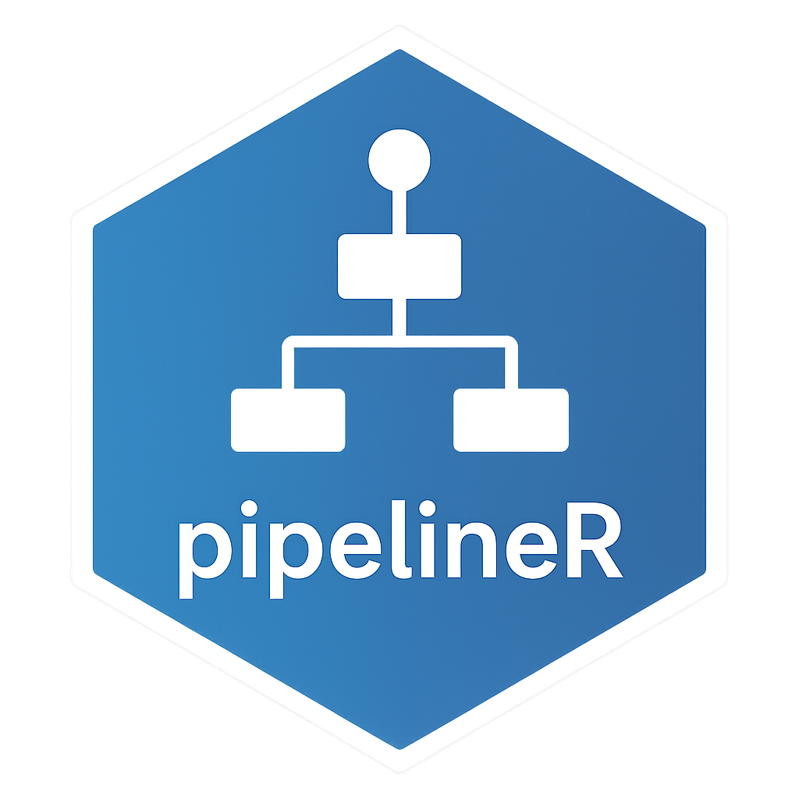

Overview
pipelineR is an R package designed to fetch stock market data from Yahoo Finance and populate a PostgreSQL database. It provides a complete pipeline for retrieving S&P 500 stock data, transforming it to a tidy format, and maintaining logs of all operations.
Installation
You can install the development version of pipelineR from GitHub with:
# install.packages("devtools")
devtools::install_github("ericofrs/pipelineR")Features
- Connect to PostgreSQL database
- Fetch S&P 500 ticker symbols
- Query stock data from Yahoo Finance
- Format data to tidy structure
- Batch processing for large symbol lists
- Insert non-duplicate data records
- Comprehensive pipeline logging
- Progress tracking for long-running operations
Required Environment Variables
The package requires the following environment variables to be set:
-
PG_DB: PostgreSQL database name -
PG_HOST: PostgreSQL host address -
PG_USER: PostgreSQL username -
PG_PASSWORD: PostgreSQL password
Usage
library(pipelineR)
# Run the complete pipeline with default settings
start_pipeline()
# Or run individual steps:
# Connect to the database
con <- connect_db()
# Fetch ticker symbols
symbols <- fetch_symbols(con)
# Get stock data for specific tickers
data <- yahoo_query_data(
c("AAPL", "MSFT", "GOOGL"),
.start = "2025-03-15",
.end = "2025-04-15"
)
# Format the data
tidy_data <- format_data(data)
# Insert data into the database
insert_new_data(tidy_data, con)
# Don't forget to disconnect
DBI::dbDisconnect(con)Data Structure
The package works with the following database schema:
<schema>.info: Contains S&P 500 symbols
<schema>.sp500_data: Contains the stock market data with columns:
symboldatemetricvalue
<schema>.pipeline_logs: Contains logs with columns:
user_loginbatch_idsymbolstatusn_rowsmessage